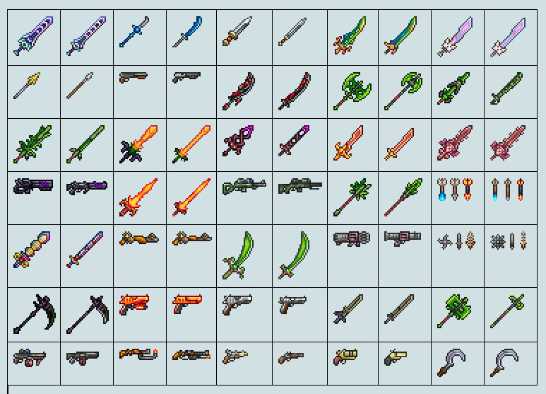
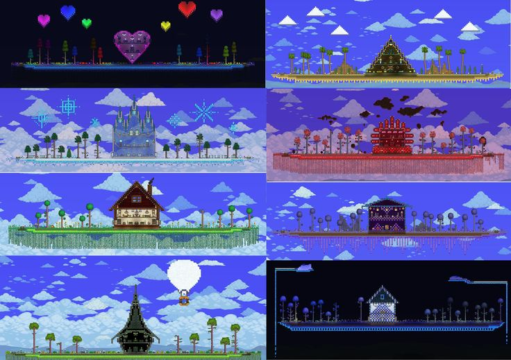

FIGHT!- Terraria está repleta de vida - tanto amiga quanto inimiga - que você encontrará em suas expedições. Exércitos nefastos, facções em guerra e chefes épicos também se escondem nas sombras... buscando despedaçar você membro por membro. Se isso não bastasse, parece que a própria lua se voltou contra você!
Felizmente, você foi abençoado com um vasto e diversificado arsenal de maneiras de se defender! De espadas a feitiçaria, de armas de fogo a armadilhas habilmente projetadas e muito mais: Terraria abraça a noção de combate em seus termos, não importa o estilo de jogo! Pegue em armas e mostre às hordas inimigas quem manda!

Cada mundo Terraria está repleto de matérias-primas esperando para serem coletadas, transformadas e utilizadas! Juntamente com um sistema de artesanato robusto, as possibilidades – e criações – são tão ilimitadas quanto a sua imaginação.
EXPLORAR!
Com uma variedade de biomas e estruturas distintas espalhadas pela paisagem, cada excursão está repleta de potencial para descobertas lendárias.
Das pastagens serenas à cruel Masmorra, à sinistra Corrupção e ao próprio abismo do Inferno, as horas passarão como segundos enquanto você se aprofunda cada vez mais nas maravilhas e mistérios do seu mundo particular!
